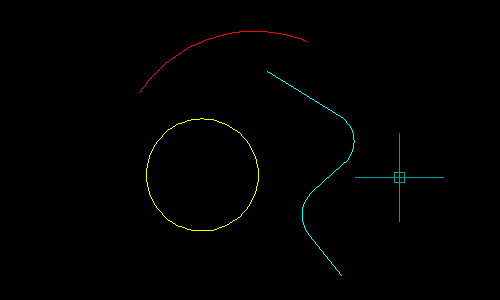

Segment Curve
This page is delivered for consistency purposes only, as part of the LeeMac sample module of DynALisp, which shows how DynALisp turns existing AutoLISP programs into a module. The program and its description are the work of Lee Mac, who keeps all the credit for them. The original page, with the latest version, is on Lee Mac's website: https://lee-mac.com/segmentcurve.html
| Function Syntax | LM-SegmentCurve – original syntax: segs (see aliases) |
| Current Version | 1.1 |
| Compatible with AutoCAD for Mac? | No |
| Compatible with AutoCAD LT? | Yes |
| Original Page | lee-mac.com/segmentcurve.html |
Program Description
This program enables the user convert every object in a selection into a polyline approximating the object using a given number of linear segments.
Upon calling the program with segs at the AutoCAD command-line, the user is prompted to make a selection of planar curve objects (Arcs, Circles, Ellipses, Lines, Splines, or 2D Polylines) and then to specify the number of segments for the resulting polyline.
The program will then proceed to create a 2D polyline with properties identical to each selected object, approximating the selected object using the specified number of linear segments.
If a selected object has a coordinate with non-zero Z-component, the resultant polyline will have an elevation equal to the Z-component of the first point on the curve.
Example of Usage

Bundled program notes
;;-------------------------=={ Segment Curve }==------------------------;;
;; ;;
;; This program enables the user convert every object in a selection ;;
;; into a polyline approximating the object using a given number of ;;
;; linear segments. ;;
;; ;;
;; Upon calling the program with 'segs' at the AutoCAD command-line, ;;
;; the user is prompted to make a selection of planar curve objects ;;
;; (Arcs, Circles, Ellipses, Lines, Splines, or 2D Polylines) and ;;
;; then to specify the number of segments for the resulting polyline. ;;
;; ;;
;; The program will then proceed to create a 2D polyline with ;;
;; properties identical to each selected object, approximating the ;;
;; selected object using the specified number of linear segments. ;;
;; ;;
;; If a selected object has a coordinate with non-zero Z-component, ;;
;; the resultant polyline will have an elevation equal to the ;;
;; Z-component of the first point on the curve. ;;
;;----------------------------------------------------------------------;;
;; Author: Lee Mac, Copyright © 2011 - www.lee-mac.com ;;
;;----------------------------------------------------------------------;;
;; Version 1.0 - 2011-04-18 ;;
;; ;;
;; - First release. ;;
;;----------------------------------------------------------------------;;
;; Version 1.1 - 2016-04-24 ;;
;; ;;
;; - Program entirely rewritten. ;;
;;----------------------------------------------------------------------;;
Command Names And Aliases
As in every DynALisp module, each program of this sample module has one main command, named LM-*, and the original command names of Lee Mac's page are kept as its aliases: they run the same command, and can be added, renamed or removed in Dyl-Suite (saved in Resources\Aliases.csv).
| Command | Aliases | Name |
|---|---|---|
| LM-SegmentCurve | SEGS | Segment Curve |